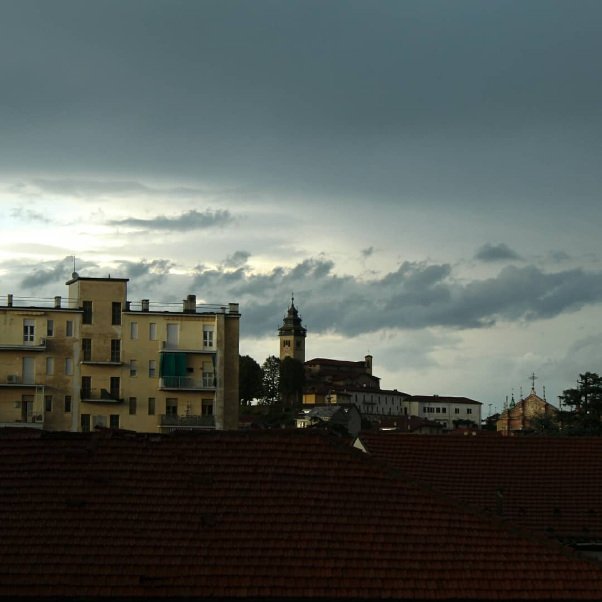

Apostu Titus

Ehi! Io sono Titus, ho 16 anni e frequento la 3°Binfo dell'IIS AVOGADRO di Torino.
Io originariamente sono rumeno e un po' lo so parlare, ma vivo in Italia da quando sono nato quindi per me è più facile parlare in italiano.
Principalmente ho due passioni: l'arte e la fotografia


E' circa da 3/4 anni che ho "intrapreso il viaggio" dell'arte, ho iniziato con
il disegnare, cosa che tutt'ora faccio e spero in futuro di poter fare altre cose artistiche.